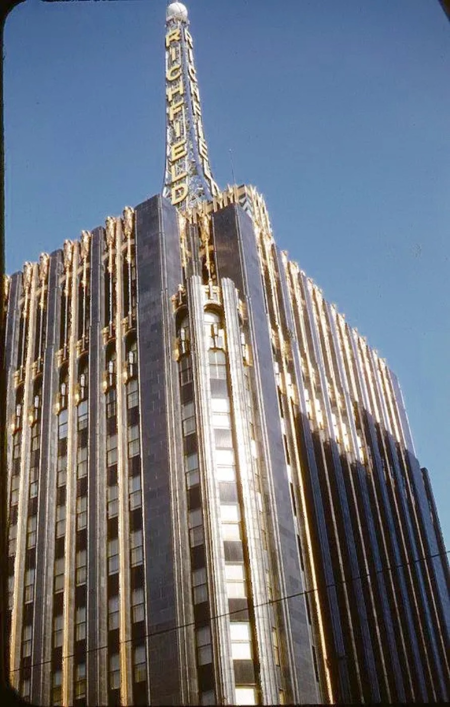
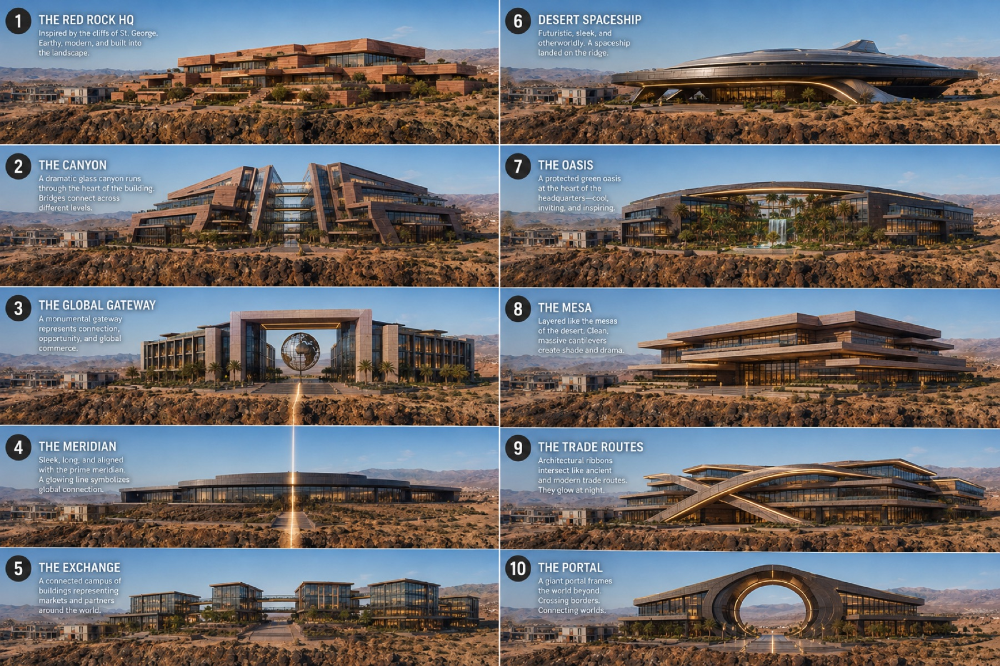

Character
Timeless, with character
The reaction I want from a person walking up to the building: why don't people build like this anymore? That reaction is the one fixed point. Everything else on this page is exploration: reference sets, concept studies, and facade directions used to figure out what produces that feeling on this mesa. Art deco shows up often because it reads classic and futuristic at once, but nobody is committed to a style. The stated worry is the opposite of a style: modern without character, stucco and glass, a building any logo could sit on.
Study set
The reference set
References collected for ornament with intent, strong verticals, and materials that age well. Two directions are both in play: a futuristic, deco lean and a warmer old-world classicism. The design should resolve the pair rather than pick one.





The Utah benchmark
The buildings Utah knows
These are the headquarters people name when they talk about tech buildings in Utah. None of this is a knock; several are good buildings, and Pluralsight's came up in our own planning conversations as a northern Utah quality reference. The point of collecting them is the opposite of imitation: I want the most important building in Utah, and that means knowing what the current standard is.


Almost every building here is glass and panel, rectilinear, and could trade logos with its neighbor. The reaction these buildings get is "that looks new." The reaction I want is "why don't people build like this anymore."
Concept studies
Trying shapes on the site
AI concept studies used to test directions, not designs. The useful ones put a massing on the real parcel, next to the hangar and containers Zonos occupies today, to see how a terraced building sits on the rim.


Ten directions, one page

Facade studies
How much ornament, in what material
These run the dial from full deco palace to quieter stone with the ornament concentrated at the entry. None is a proposal; together they map the range being explored.


The globe
A landmark object
One landmark idea keeps returning: a bronze Earth at the entry or in the courtyard, the global company stated in one object. Two studies of what it could be.


Other structural ideas in the same exploring pile: a see-through gesture where the road side looks through the building to the sky beyond, operable windows (viable in this climate, and the payback math favors an owner-occupier), and mass timber or a hybrid structure as a material direction worth pricing.